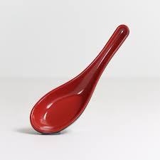

Victril's Journal
So fresh and so clean
frinds
mohamed
youssef
mahmoud
04/09/08:
spatulas
Yesterday I went to stor and got some much-neaded spatulas! (whate better way to say I love myself
than to buy myself spatulas)
